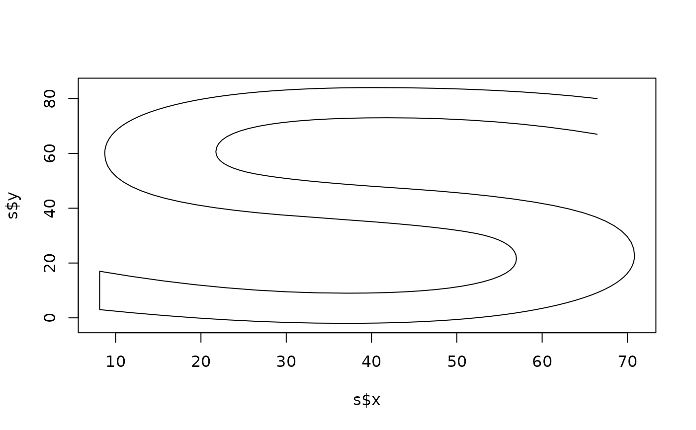

This function allows you to retrieve the outline of glyphs as polygon coordinates. The glyphs are given as indexes into a font file and not as characters allowing you to retrieve outlines for glyphs that doesn't have a character counterpoint. Glyphs that are given as bitmaps are ignored.
Arguments
- glyph
The index of the glyph in the font file
- path
The path to the font file encoding the glyph
- index
The index of the font in the font file
- size
The size of the font in big points (1/72 inch)
- tolerance
The deviation tolerance for decomposing bezier curves of the glyph. Given in the same unit as size. Smaller values give more detailed polygons
- verbose
Should font and glyph loading errors be reported as warnings
Value
A data frame giving the outlines of the glyphs provide in glyph. It
contains the columns glyph pointing to the element in the input it relates
to, contour enumerating the contours the glyph consists of, and x and y
giving the coordinates in big points
Examples
# Get the shape of s in the default font
font <- font_info()
glyph <- glyph_info("s", path = font$path, index = font$index)
s <- glyph_outline(glyph$index, font$path, font$index, size = 150)
plot(s$x, s$y, type = 'l')
